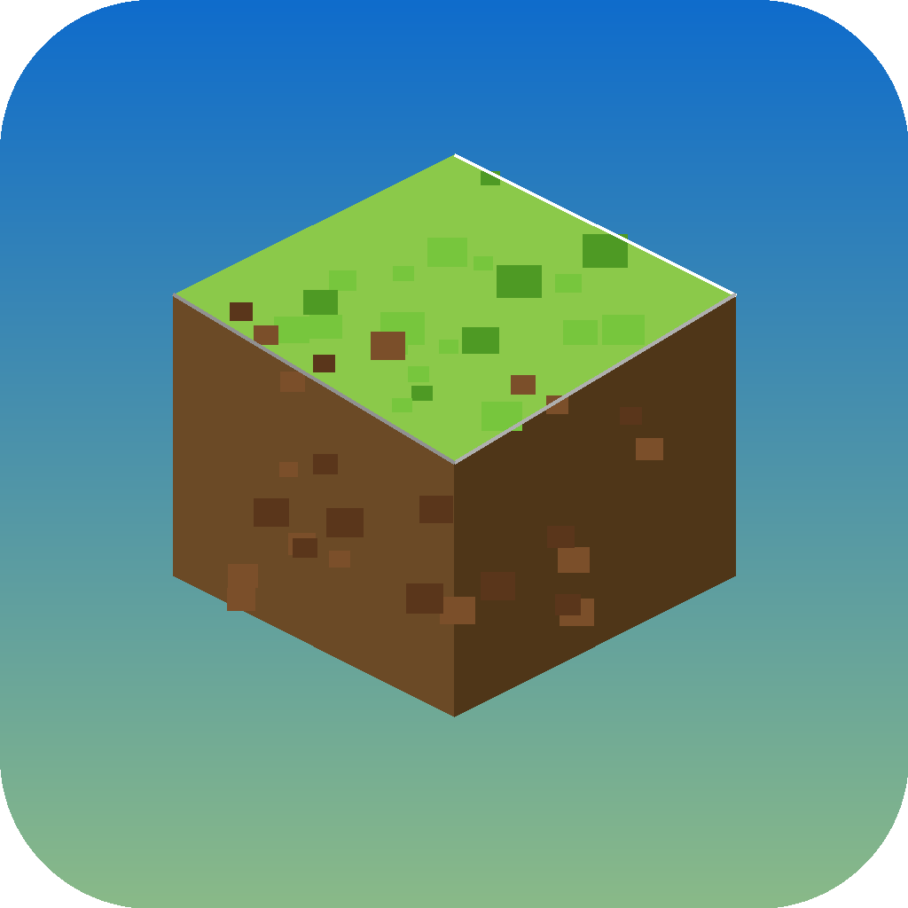
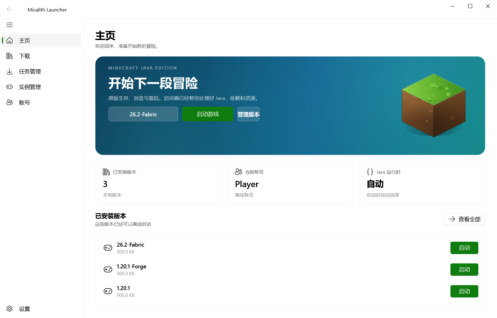
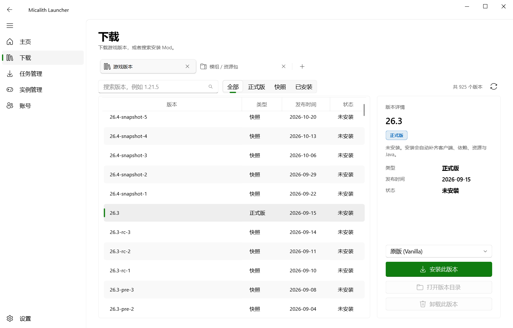
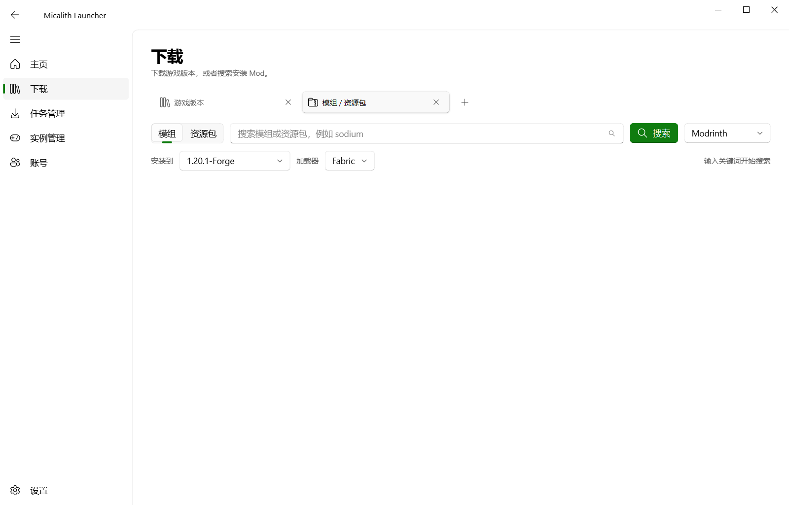
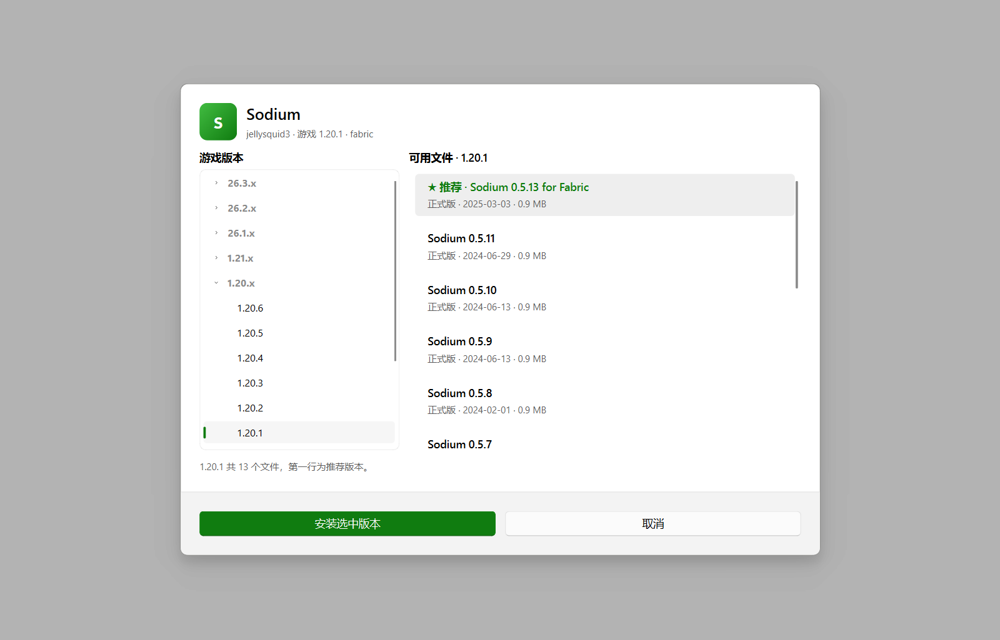
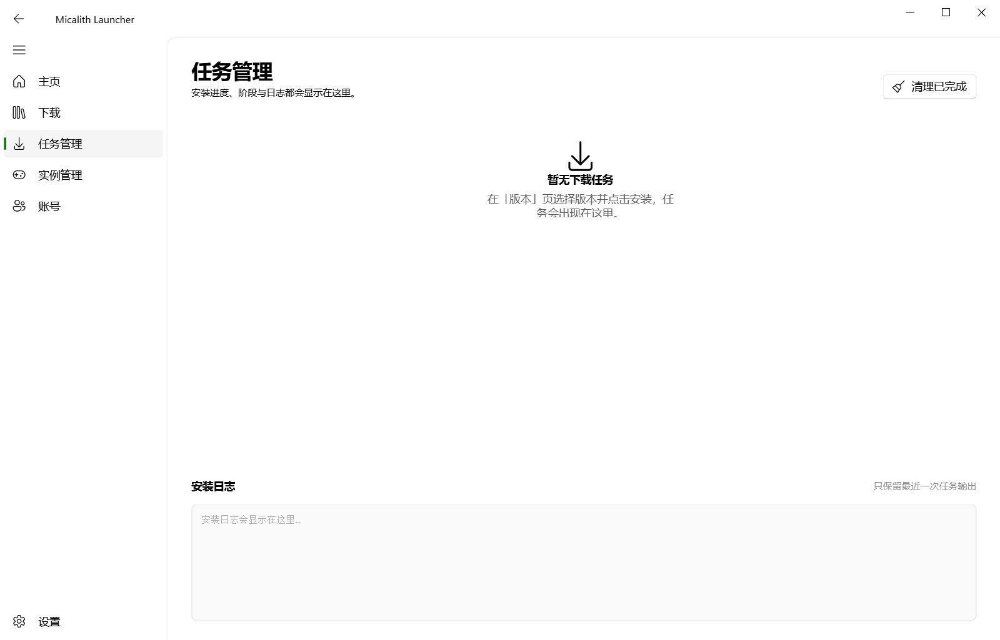
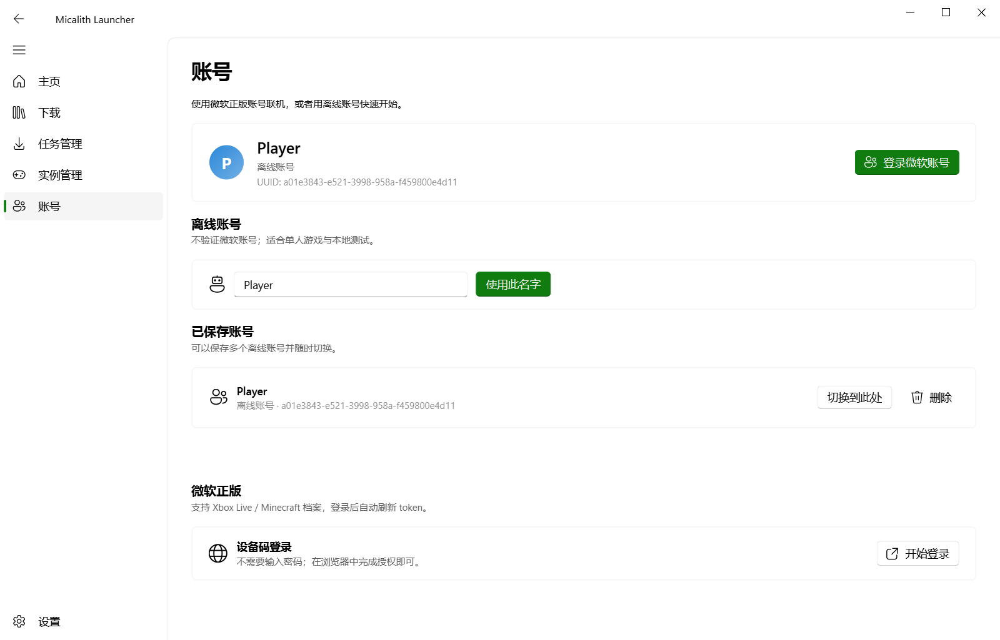
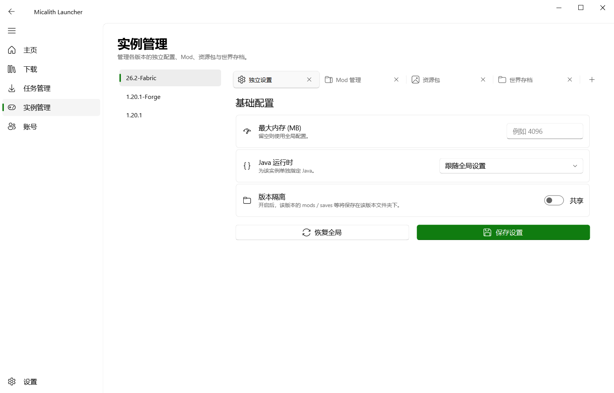
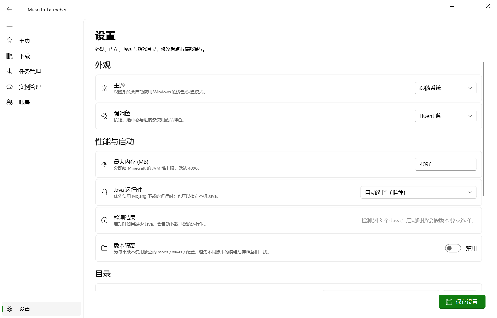

任意版本安装
正式版、快照、远古版本通吃，输入 latest 也能装最新的。老版本的 virtual 资源会自动整理。

MicalithLauncher一个用 Python 写成的轻量启动器。原版生存、创造和快照版本都能装， 依赖、资源与 Java 运行时自动补齐，装好就能点启动。

不做全家桶。启动器只负责把游戏装好、起好，其余交给你。
正式版、快照、远古版本通吃，输入 latest 也能装最新的。老版本的 virtual 资源会自动整理。
客户端 jar、libraries、natives 解压、assets 对象、log4j 配置，一次装全，SHA1 校验不通过就重下。
扫 JAVA_HOME、PATH、注册表和常见目录，找不到就下 Mojang 官方运行时，不用自己配环境变量。
离线账号即开即用，微软正版走设备码登录，refresh token 存本地、过期自动刷新。
内置 Modrinth / CurseForge 搜索，按游戏版本分组挑文件，装到指定实例，进度进任务管理。
镜像源优先、失败自动回退官方源。并发下载带进度条，断点文件会清掉重下，不会留下坏包。
Mica 毛玻璃、云母材质、圆角卡片，和 Windows 11 的原生观感一致。







单文件可执行程序，不用装 Python，解压即用。
Windows 10 / 11 · 64 位
SHA256 校验值会随发布一起给出。
Windows 7 SP1 · 已实测通过
单独构建。打包时替换了 python38.dll 里写死的 LoadLibraryExW 标志位，
并内置现代 CA 证书包，解决 Win7 上常见的 _socket 加载失败与证书校验失败。
Python 3.10+
git clone https://github.com/yuhaoya/micalith-launcher
cd mc-launcher
pip install PySide6 PySide6-Fluent-Widgets
python mcl-gui.py原版 1.20 左右大约 400–600 MB，主要是资源文件。启动器会并发下载并校验 SHA1，已完成的文件下次直接跳过。
不用。启动器会先在本机找合适的 Java，找不到就下载 Mojang 官方运行时（约 90–150 MB），并且会自动选对版本。
支持。走微软设备码流程：浏览器输入 8 位代码完成授权，之后 refresh token 存在本地，下次启动静默刷新。账号需要先创建过 Xbox 档案。
设置里可以把镜像源切到 BMCLAPI，所有下载会走镜像；镜像不可用时会自动回退到官方源，不会卡死在某一个源上。
能。Win7 版是独立构建：Python 3.8 + PySide6 6.1.3，打包阶段修补了 python38.dll 的 LoadLibraryExW 标志位（Win7 缺 KB2533623 时 _socket 会加载失败），并内置了现代 CA 证书包。
不会。启动器只访问 Mojang、微软和内容源的 API，配置和账号 token 都存在本地 config.json 里，不上传任何地方。